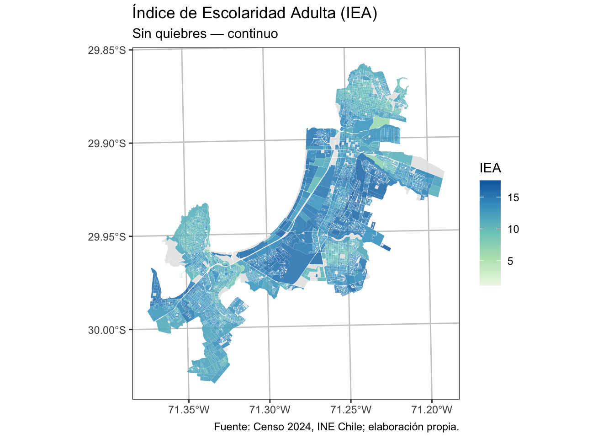
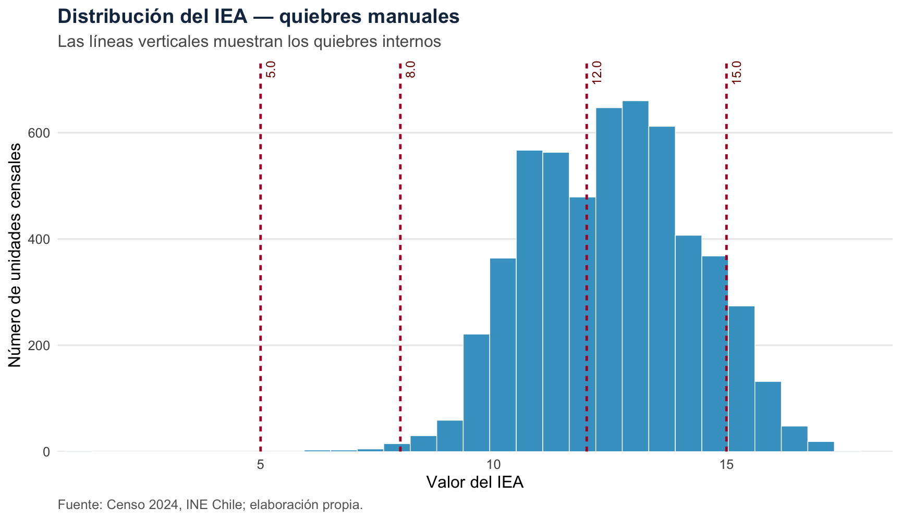
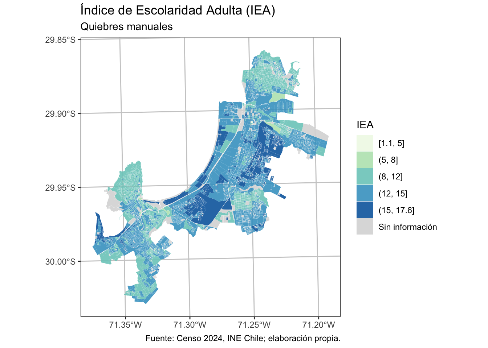
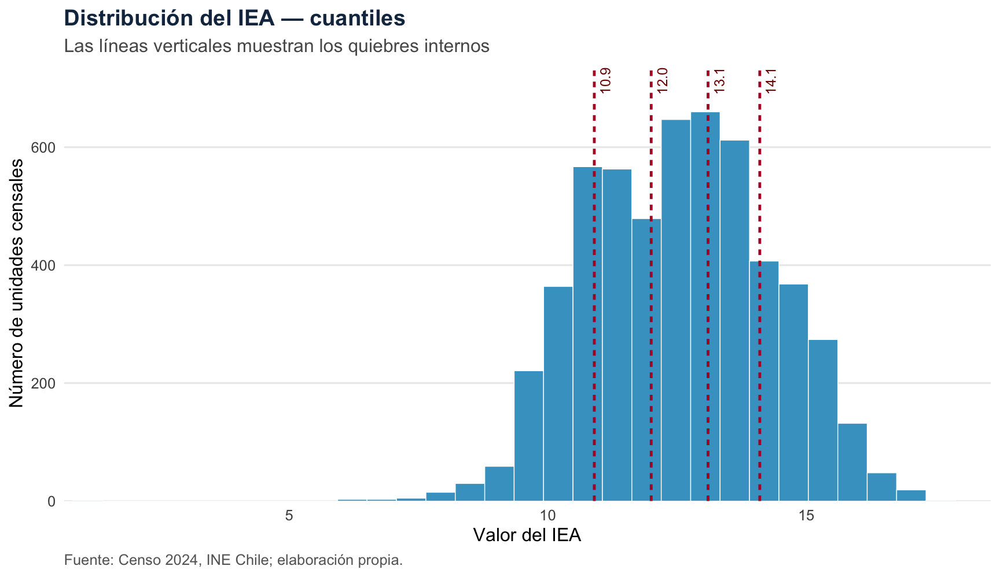
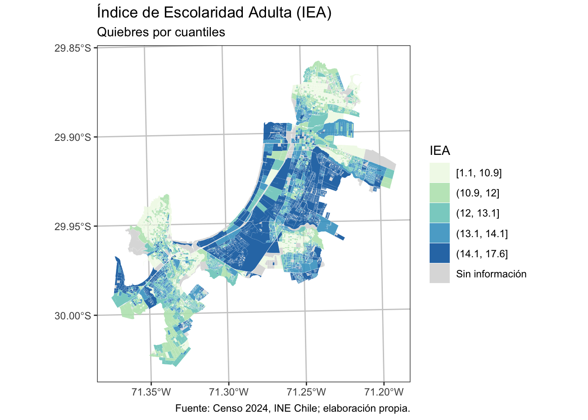
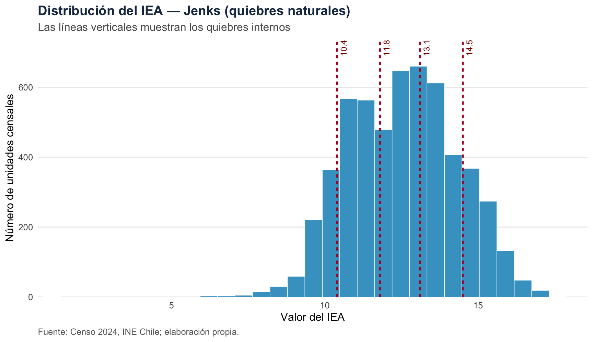
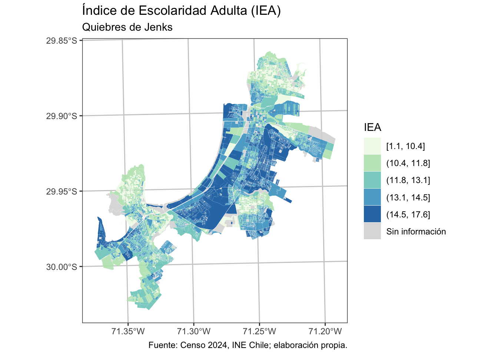
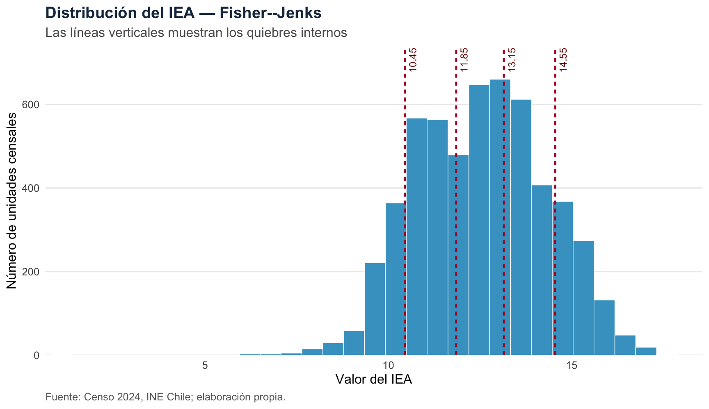
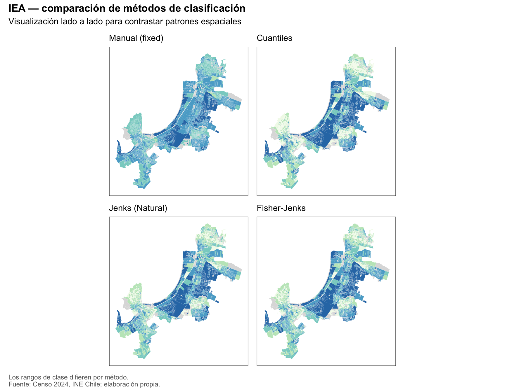

# Librerías ---------------------------------------------------------------
library(sf)
library(dplyr)
library(ggplot2)
library(classInt)
library(forcats)
library(patchwork)Appendix E — Mapas y Quiebres
Quiebres y paletas de colores en mapas
E.1 Introducción
En cartografía temática, los quiebres de clase (cómo segmentamos un continuo numérico en categorías) y la paleta de colores (cómo codificamos visualmente esas clases) son decisiones que moldean la interpretación. En indicadores territoriales, estos dos elementos determinan qué patrones de variabilidad espacial se hacen evidentes y, por tanto, qué narrativas llegan a tomadores de decisión.
El mismo dato puede “contar historias distintas” según el esquema de clasificación (p. ej., cuantiles vs. Jenks) y la paleta (p. ej., secuencial vs. divergente). Por eso, esta sección pone el foco en criterios de elección y ofrece un flujo práctico reproducible para que tus mapas sean consistentes, legibles y éticamente responsables.
E.2 Objetivos
- Entender por qué los quiebres y las paletas afectan la percepción del fenómeno.
- Conocer las propiedades de varios tipos de quiebre (manual, cuantiles, Jenks/Fisher).
- Aplicar un pipeline en R para producir mapas coropléticos robustos:
- Manejo de
NAcomo “Sin información”. - Etiquetas legibles por clase.
- Paletas consistentes con el número de clases.
- Control de errores (cortes duplicados, valores no finitos).
- Manejo de
E.3 Justificación
- Riesgo de sesgo visual: un quiebre inapropiado puede exagerar o esconder cambios, afectando decisiones (priorización de recursos, focalización territorial).
- Percepción humana del color: paletas mal elegidas (p. ej., arcoíris) introducen artefactos perceptuales; una paleta secuencial uniforme comunica magnitudes de forma estable y comprensible.
- Transparencia: exponer el criterio de quiebre y el tratamiento de
NAes parte de la ética de la comunicación en políticas públicas.
E.4 ¿Qué es un quiebre de clase?
Una variable cuantitativa puede representarse con una escala continua o agruparse en intervalos. Los quiebres son los valores que delimitan esos intervalos. Por ejemplo, los cortes 5, 8 y 12 separan la variable en cuatro clases. Cada unidad espacial recibe el color de la clase en la que cae su valor.
Clasificar siempre implica una simplificación: dentro de una misma clase, valores distintos se muestran con el mismo color; a ambos lados de un corte, valores muy parecidos pueden recibir colores diferentes. Por eso, antes de elegir un método es necesario definir:
- El propósito del mapa: comparar posiciones relativas, comunicar umbrales o explorar agrupamientos en la distribución.
- El número de clases: pocas clases facilitan la lectura, pero resumen más; muchas conservan detalle, pero hacen más difícil distinguir colores y explicar la leyenda. Como punto de partida suelen funcionar entre cuatro y siete clases.
- El universo de comparación: si se compararán territorios o años, conviene usar los mismos cortes en todos los mapas. Recalcularlos para cada subconjunto puede producir colores iguales que representan valores distintos.
- La forma de la distribución: asimetría, valores extremos, vacíos y valores repetidos pueden modificar considerablemente los resultados.
E.5 Métodos de clasificación
E.5.1 Quiebres manuales (fixed)
Los cortes se definen antes de observar o clasificar el mapa, a partir de criterios externos: umbrales normativos, metas institucionales, categorías disciplinares o una escala común acordada. El algoritmo no busca grupos en los datos; aplica exactamente los límites especificados por quien analiza.
Cuándo utilizarlo. Es la mejor opción cuando las categorías tienen significado sustantivo —por ejemplo, cumplimiento de una norma— o cuando se requiere comparar varios lugares o periodos con una escala idéntica.
Consideraciones. Cada corte debe justificarse y documentarse. Es necesario comprobar que el mínimo y el máximo queden cubiertos, que no se generen clases vacías y que los umbrales sigan siendo pertinentes para el contexto. Si los cortes se eligen solo después de mirar el patrón espacial, existe el riesgo de construir una narrativa a conveniencia. En este capítulo, 5, 8, 12 y 15 son cortes exclusivamente didácticos, no umbrales normativos.
E.5.2 Cuantiles (quantile)
Primero se ordenan los valores y luego se ubican los cortes para que cada clase contenga aproximadamente la misma cantidad de unidades espaciales. Con cinco clases, cada una intenta reunir cerca del 20 % de las observaciones. Las clases suelen tener anchos numéricos diferentes: un intervalo puede abarcar décimas y otro varios puntos.
Cuándo utilizarlo. Es apropiado para comunicar posición relativa —los grupos con valores más bajos o más altos dentro del universo estudiado— y para asegurar que todos los colores tengan presencia en el mapa.
Consideraciones. No debe interpretarse como una división en magnitudes equivalentes. Puede separar valores casi iguales solo para equilibrar cantidades y, cuando hay muchos empates, puede producir menos clases de las solicitadas. Además, los cortes cambian al cambiar la muestra; por ello no es recomendable recalcularlos por separado si se desea comparar años o territorios.
E.5.3 Quiebres naturales de Jenks (jenks)
Jenks busca cortes que agrupen valores semejantes. En términos simples, intenta reducir la variación dentro de cada clase y aumentar la separación entre clases. Por ello, los cortes suelen ubicarse en saltos o zonas poco densas de la distribución, en vez de repartir las observaciones por igual.
Cuándo utilizarlo. Resulta útil en mapas exploratorios de una sola distribución, especialmente cuando esta es asimétrica, presenta grupos reconocibles o tiene rangos de concentración distintos.
Consideraciones. El resultado depende de los datos y del número de clases. Los valores extremos pueden atraer un corte y dejar clases con pocas observaciones. Como los límites cambian con la muestra, dos mapas calculados por separado no son directamente comparables aunque utilicen la misma paleta. También se debe informar el número de clases elegido.
E.5.4 Fisher (fisher o Fisher–Jenks)
Fisher utiliza programación dinámica para encontrar la partición que minimiza de forma global la variación dentro de las clases para el número solicitado. Comparte el objetivo general de los quiebres naturales, pero busca sistemáticamente la solución óptima bajo ese criterio; por eso suele producir límites iguales o muy próximos a Jenks, aunque no necesariamente idénticos.
Cuándo utilizarlo. Es conveniente cuando se desea una clasificación natural reproducible y una solución óptima para la distribución analizada. Es especialmente útil para contrastar el resultado de Jenks o cuando pequeñas diferencias en los cortes importan.
Consideraciones. “Óptimo” se refiere solo a minimizar la variación interna; no significa que la clasificación sea automáticamente la más adecuada para comunicar o tomar decisiones. Sigue siendo dependiente de la muestra, del número de clases y de los valores extremos. Tampoco resuelve por sí solo la comparabilidad temporal o territorial.
| Método | Pregunta que responde | Conviene cuando… | Precaución principal |
|---|---|---|---|
| Manual | ¿Qué unidades cruzan umbrales con significado externo? | Hay normas, metas o se necesita una escala común | Justificar los cortes y revisar clases vacías |
| Cuantiles | ¿Qué unidades ocupan posiciones relativas similares? | Interesa el orden y una cantidad parecida de casos por clase | Puede separar valores casi iguales y cambia con la muestra |
| Jenks | ¿Dónde aparecen agrupamientos o saltos en estos datos? | Se explora una distribución irregular en un mapa | Es sensible a extremos, al número de clases y a la muestra |
| Fisher | ¿Cuál es la partición de mínima variación interna? | Se busca una solución natural óptima y reproducible | La optimalidad estadística no garantiza pertinencia sustantiva |
E.6 Parte práctica (R): de la distribución al mapa
Aplicaremos los cuatro métodos al Índice de Escolaridad Adulta (IEA) de las unidades censales urbanas de la localidad LA SERENA - COQUIMBO, que abarca sectores de las comunas de La Serena y Coquimbo. Antes de construir cada mapa se mostrará un histograma: las barras describen la distribución observada y las líneas verticales indican los quiebres internos. Esta lectura previa permite entender qué valores agrupa cada método antes de examinar su patrón espacial.
Alcance de los datos
La práctica utiliza variables agregadas del Censo de Población y Vivienda 2024 del Instituto Nacional de Estadísticas (INE) de Chile. A partir de ellas se construyó, con fines didácticos, una base de indicadores socioeconómicos para las unidades censales urbanas de la localidad LA SERENA - COQUIMBO. El archivo utilizado es un producto derivado y no corresponde a un indicador oficial publicado por el INE.
El IEA es un proxy que representa el promedio de años de escolaridad de la población de 18 años o más en cada unidad con población. Describe condiciones agregadas observadas por el Censo 2024; no permite inferir la escolaridad de personas u hogares individuales. La construcción del indicador y sus demás limitaciones se documentan en el capítulo de indicadores territoriales.
Además, durante el ejercicio:
- Controlamos
NAcomo “Sin información” (color gris), y damos opción de ocultarlo de la leyenda. - Ajustamos la paleta automáticamente si el número de clases cambia.
E.6.1 Preparación
Librerías
Funciones de ayuda
# Utilidades (helpers) ----------------------------------------------------
# Asegura que la paleta tenga exactamente K colores
ensure_palette_length <- function(pal, K) {
if (length(pal) == K) return(pal)
grDevices::colorRampPalette(pal)(K)
}
# Crea etiquetas de intervalos legibles [a, b], (a, b]
labels_from_breaks <- function(brks) {
labs <- sprintf("(%s, %s]", head(brks, -1), tail(brks, -1))
labs[1] <- sprintf("[%s, %s]", brks[1], brks[2])
labs
}
# Calcula cortes robustos con classInt (evita n > únicos y duplicados)
robust_breaks <- function(x, n, style = "quantile") {
x_ok <- x[is.finite(x)]
n_eff <- min(n, max(1, length(unique(x_ok)) - 1))
ci <- classIntervals(x_ok, n = n_eff, style = style)
sort(unique(ci$brks))
}
# Grafica la distribución y superpone los quiebres internos
plot_break_distribution <- function(x, brks, metodo, fuente, bins = 30) {
datos <- data.frame(IEA = x[is.finite(x)])
cortes <- brks[-c(1, length(brks))]
cortes_df <- data.frame(
corte = cortes,
etiqueta = format(round(cortes, 2), trim = TRUE, nsmall = 1)
)
ggplot(datos, aes(x = IEA)) +
geom_histogram(
bins = bins,
fill = "#43a2ca",
colour = "white",
linewidth = 0.25
) +
geom_vline(
data = cortes_df,
aes(xintercept = corte),
colour = "#b2182b",
linewidth = 0.85,
linetype = "22"
) +
geom_label(
data = cortes_df,
aes(x = corte, y = Inf, label = etiqueta),
inherit.aes = FALSE,
angle = 90,
hjust = 1,
vjust = 1.2,
size = 3.2,
linewidth = 0,
label.padding = grid::unit(0.12, "lines"),
colour = "#7f0000",
fill = "white"
) +
scale_x_continuous(expand = expansion(mult = c(0.01, 0.04))) +
scale_y_continuous(expand = expansion(mult = c(0, 0.12))) +
labs(
title = paste("Distribución del IEA —", metodo),
subtitle = "Las líneas verticales muestran los quiebres internos",
x = "Valor del IEA",
y = "Número de unidades censales",
caption = fuente
) +
theme_minimal(base_size = 12) +
theme(
plot.title = element_text(face = "bold", colour = "#17324d"),
plot.subtitle = element_text(colour = "grey35"),
panel.grid.minor = element_blank(),
panel.grid.major.x = element_blank(),
plot.caption = element_text(colour = "grey40", hjust = 0)
)
}
nota_fuente <- "Fuente: Censo 2024, INE Chile; elaboración propia."Datos
El archivo RDS fue generado en el capítulo de indicadores territoriales. Contiene las geometrías urbanas procesadas, los atributos censales agregados y los indicadores derivados. La primera ruta corresponde a la estructura de carpetas propuesta para los ejercicios; la segunda se utiliza únicamente durante la publicación del libro.
la_serena_urb <- readRDS("results/R04_Coquimbo_LaSerena_urbano_ind_socioeconomicos_2024.rds")Paleta de colores
# Paleta de Colores (secuencial) ------------------------------------------
# Referencia: https://colorbrewer2.org/#type=sequential&scheme=GnBu&n=5
pal_IEA <- c('#f0f9e8','#bae4bc','#7bccc4','#43a2ca','#0868ac')
# n_breaks = 20
# pal<- colorRampPalette(
# c('#f0f9e8','#bae4bc','#7bccc4','#43a2ca','#0868ac'))( n_breaks )E.6.2 Mapa base (paleta continua)
# Mapa con Colores Continuo -----------------------------------------------
map_cont <- ggplot() +
geom_sf(data = la_serena_urb, aes(fill = IEA),
color = NA, alpha = 0.9, linewidth = 0.1) +
scale_fill_gradientn(colors = pal_IEA, name = "IEA",
na.value = "grey90") +
labs(title = "Índice de Escolaridad Adulta (IEA)",
subtitle = "Sin quiebres — continuo",
x = NULL, y = NULL,
caption = nota_fuente) +
theme_bw() +
theme(panel.grid.major = element_line(colour = "gray80"),
panel.grid.minor = element_blank())
map_cont
E.6.3 Quiebres manuales (fixed)
Para el ejemplo se proponen los valores 5, 8, 12 y 15. El mínimo y el máximo observados se agregan automáticamente para cubrir todo el rango. El histograma permite comprobar que estos cortes producen clases de distinto ancho y con cantidades desiguales de unidades censales. Esto no es un error: en una clasificación manual prima el significado de los umbrales, no el equilibrio estadístico.
# Definición manual para fines didácticos; no corresponde a umbrales oficiales
min_IEA <- min(la_serena_urb$IEA, na.rm = TRUE)
max_IEA <- max(la_serena_urb$IEA, na.rm = TRUE)
brks_manual <- c(min_IEA, 5, 8, 12, 15, max_IEA)
graf_dist_manual <- plot_break_distribution(
la_serena_urb$IEA,
brks_manual,
"quiebres manuales",
nota_fuente
)
graf_dist_manual
Las líneas se encuentran en valores definidos por quien analiza. Antes de reutilizar este código, reemplaza cortes_manuales por límites respaldados por una norma, una hipótesis o un criterio sustantivo explícito.
# Etiquetas y variable de clases
labs_m <- labels_from_breaks(brks_manual)
# Variable de clases + NA explícito
la_serena_urb <- la_serena_urb %>%
mutate(
IEA_qm = cut(
IEA,
breaks = brks_manual,
include.lowest = TRUE,
labels = labs_m
),
IEA_qm = forcats::fct_na_value_to_level(IEA_qm, level = "Sin información")
)
# Paleta nombrada (añade gris para NA)
niveles_sin_na <- setdiff(levels(la_serena_urb$IEA_qm), "Sin información")
pal_m <- ensure_palette_length(pal_IEA, length(niveles_sin_na))
vals_m <- setNames(pal_m, niveles_sin_na)
vals_m <- c(vals_m, "Sin información" = "#d9d9d9")
map_q_manual <- ggplot() +
geom_sf(data = la_serena_urb, aes(fill = IEA_qm),
color = NA, alpha = 0.9, linewidth = 0.1) +
scale_fill_manual(values = vals_m, name = "IEA",
drop = FALSE) +
labs(title = "Índice de Escolaridad Adulta (IEA)",
subtitle = "Quiebres manuales",
caption = nota_fuente) +
theme_bw() +
theme(panel.grid.major = element_line(colour = "gray80"),
panel.grid.minor = element_blank())
map_q_manual
E.6.4 Quiebres por cuantiles (quantile)
Con cinco clases, el método intenta ubicar cuatro líneas de modo que cada intervalo contenga cerca de una quinta parte de las unidades censales con información. En el histograma es normal observar líneas más juntas en las zonas de alta concentración y más separadas en las colas. Lo que se iguala es la cantidad de observaciones, no la distancia numérica entre cortes.
n <- 5 # número de clases
# Generación de Quiebres
brks_quantile <- robust_breaks(
la_serena_urb$IEA,
n = n,
style = "quantile"
)
graf_dist_quantile <- plot_break_distribution(
la_serena_urb$IEA,
brks_quantile,
"cuantiles",
nota_fuente
)
graf_dist_quantile
La mayor concentración de líneas señala el tramo donde pequeños cambios de IEA pueden hacer que una unidad censal cambie de color. El mapa siguiente debe leerse como una comparación de posiciones relativas dentro de la localidad LA SERENA - COQUIMBO, no como una escala de intervalos equivalentes.
# Etiquetas legibles para la leyenda (incluye el límite inferior cerrado en el primer tramo)
labs_q <- labels_from_breaks(brks_quantile)
# crear variable con clasificación con quiebres
la_serena_urb <- la_serena_urb %>%
mutate(
IEA_qq = cut(
IEA,
breaks = brks_quantile,
include.lowest = TRUE,
labels = labs_q
),
IEA_qq = forcats::fct_na_value_to_level(IEA_qq, level = "Sin información")
)
#Construir vector de colores nombrado (añadimos color para "Sin información")
niveles_sin_na <- setdiff(levels(la_serena_urb$IEA_qq), "Sin información")
pal_q <- ensure_palette_length(pal_IEA, length(niveles_sin_na))
vals_qq <- setNames(pal_q, niveles_sin_na)
vals_qq <- c(vals_qq, "Sin información" = "#d9d9d9")
# Mapa
map_q_quantile <- ggplot() +
geom_sf(data = la_serena_urb, aes(fill = IEA_qq),
color = NA, alpha = 0.9, linewidth = 0.1) +
scale_fill_manual(values = vals_qq, name = "IEA",
drop = FALSE) +
labs(title = "Índice de Escolaridad Adulta (IEA)",
subtitle = "Quiebres por cuantiles",
caption = nota_fuente) +
theme_bw() +
theme(panel.grid.major = element_line(colour = "gray80"),
panel.grid.minor = element_blank())
map_q_quantile
E.6.5 Quiebres de Jenks (jenks o Natural Breaks)
Ahora los cortes se adaptan a los agrupamientos de la distribución. Las líneas tienden a aparecer donde hay cambios de densidad o separaciones entre valores. A diferencia de los cuantiles, no se espera que cada clase tenga el mismo número de unidades censales.
n <- 5
# Generación de Quiebres
brks_jenks <- robust_breaks(
la_serena_urb$IEA,
n = n,
style = "jenks"
)
graf_dist_jenks <- plot_break_distribution(
la_serena_urb$IEA,
brks_jenks,
"Jenks (quiebres naturales)",
nota_fuente
)
graf_dist_jenks
Si una línea deja muy pocas barras a un lado, conviene revisar si está aislando valores extremos. Esa clase puede ser estadísticamente coherente, pero quizá resulte poco útil para el propósito comunicacional del mapa.
# Etiquetas legibles para la leyenda (incluye el límite inferior cerrado en el primer tramo)
labs_j <- labels_from_breaks(brks_jenks)
# crear variable con clasificación con quiebres
la_serena_urb <- la_serena_urb %>%
mutate(
IEA_qj = cut(
IEA,
breaks = brks_jenks,
include.lowest = TRUE,
labels = labs_j
),
IEA_qj = forcats::fct_na_value_to_level(IEA_qj, level = "Sin información")
)
#Construir vector de colores nombrado (añadimos color para "Sin información")
niveles_sin_na <- setdiff(levels(la_serena_urb$IEA_qj), "Sin información")
pal_j <- ensure_palette_length(pal_IEA, length(niveles_sin_na))
vals_qj <- setNames(pal_j, niveles_sin_na)
vals_qj <- c(vals_qj, "Sin información" = "#d9d9d9")
# Mapa
map_q_jenks <- ggplot() +
geom_sf(data = la_serena_urb, aes(fill = IEA_qj),
color = NA, alpha = 0.9, linewidth = 0.1) +
scale_fill_manual(values = vals_qj, name = "IEA",
drop = FALSE ) +
labs(title = "Índice de Escolaridad Adulta (IEA)",
subtitle = "Quiebres de Jenks",
x = NULL, y = NULL,
caption = nota_fuente) +
theme_bw() +
theme(panel.grid.major = element_line(colour = "gray80"),
panel.grid.minor = element_blank())
map_q_jenks
E.6.6 Quiebres de Fisher (fisher)
Fisher parte de la misma idea de formar clases internamente homogéneas, pero busca la partición global de mínima variación interna. El histograma permite verificar cuánto se parece su solución a Jenks y localizar cualquier diferencia. Una similitud alta es esperable: ambos optimizan una noción de homogeneidad, aunque lo hacen mediante procedimientos distintos.
n <- 5
# Generación de Quiebres
brks_fisher <- robust_breaks(
la_serena_urb$IEA,
n = n,
style = "fisher"
)
graf_dist_fisher <- plot_break_distribution(
la_serena_urb$IEA,
brks_fisher,
"Fisher--Jenks",
nota_fuente
)
graf_dist_fisher
El criterio matemático ayuda a resumir la distribución, pero no reemplaza la decisión cartográfica. Antes de adoptar estos cortes se debe evaluar si las clases resultantes son interpretables y si el mapa se comparará con otros periodos o territorios.
# Etiquetas legibles para la leyenda (incluye el límite inferior cerrado en el primer tramo)
labs_f <- labels_from_breaks(brks_fisher)
# crear variable con clasificación con quiebres
la_serena_urb <- la_serena_urb %>%
mutate(
IEA_qf = cut(
IEA,
breaks = brks_fisher,
include.lowest = TRUE,
labels = labs_f
),
IEA_qf = forcats::fct_na_value_to_level(IEA_qf, level = "Sin información")
)
#Construir vector de colores nombrado (añadimos color para "Sin información")
niveles_sin_na <- setdiff(levels(la_serena_urb$IEA_qf), "Sin información")
pal_f <- ensure_palette_length(pal_IEA, length(niveles_sin_na))
vals_qf <- setNames(pal_f, niveles_sin_na)
vals_qf <- c(vals_qf, "Sin información" = "#d9d9d9")
# Mapa
map_q_fisher <- ggplot() +
geom_sf(data = la_serena_urb, aes(fill = IEA_qf),
color = NA, alpha = 0.9, linewidth = 0.1) +
scale_fill_manual(values = vals_qf, name = "IEA",
drop = FALSE ) +
labs(title = "Índice de Escolaridad Adulta (IEA)",
subtitle = "Quiebres de Fisher",
x = NULL, y = NULL,
caption = nota_fuente) +
theme_bw() +
theme(panel.grid.major = element_line(colour = "gray80"),
panel.grid.minor = element_blank())
map_q_fisherE.7 Recomendaciones prácticas
- Define primero la pregunta. Usa cortes manuales para umbrales con significado externo; cuantiles para posiciones relativas; y Jenks o Fisher para explorar agrupamientos propios de una distribución.
- Mira la distribución antes del mapa. Revisa el histograma, los valores extremos, los empates y cuántas observaciones quedan en cada clase. Una clase casi vacía merece una explicación o una revisión.
- Prueba la sensibilidad. Compara, por ejemplo, cuatro, cinco y seis clases. Si la historia territorial cambia drásticamente, la conclusión es frágil y debe comunicarse con cautela.
- Mantén la comparabilidad. Para comparar años, comunas o regiones, calcula una escala común sobre el universo completo o utiliza cortes manuales constantes. No basta con repetir los mismos colores.
- Construye una leyenda honesta. Informa el método, el número de clases, los límites, la unidad del indicador y el tratamiento de
NA. “Sin información” no significa cero. - Cuida la percepción del color. Para magnitudes ordenadas usa una paleta secuencial y perceptualmente ordenada. ColorBrewer es una buena base para seleccionar alternativas accesibles.
- Recuerda que estos métodos no son espaciales. Los cortes utilizan los valores, pero no la vecindad entre unidades. Además, el patrón puede cambiar al modificar la unidad geográfica —manzana, zona o comuna—, efecto relacionado con el problema de la unidad espacial modificable (MAUP).
En una publicación o informe, una formulación transparente sería: “El indicador se clasificó en cinco clases mediante cuantiles, calculados sobre todas las unidades censales del área de estudio; las unidades sin dato se muestran en gris”.
E.8 Comparación visual de los métodos de quiebres
# --- Helpers de seguridad -------------------------------------------------
mk_named_pal <- function(levels_vec, base_pal) {
base_pal <- ensure_palette_length(base_pal, length(levels_vec))
setNames(base_pal, levels_vec)
}
make_map <- function(df, fill_var, vals_named, subt) {
# aserciones útiles
stopifnot(is.factor(df[[fill_var]]))
stopifnot(all(levels(df[[fill_var]]) %in% names(vals_named)))
ggplot() +
geom_sf(data = df, aes(fill = .data[[fill_var]]),
color = NA, alpha = 0.9, linewidth = 0.1) +
scale_fill_manual(values = vals_named, name = "IEA", drop = FALSE) +
labs(title = NULL, subtitle = subt, x = NULL, y = NULL) +
theme_bw() +
theme(panel.grid.major = element_blank(),
panel.grid.minor = element_blank(),
axis.text = element_blank(),
axis.ticks = element_blank(),
legend.position = "none")
}
# --- 1) Asegurar que las variables de clase existen y son factor ----------
stopifnot(is.factor(la_serena_urb$IEA_qm),
is.factor(la_serena_urb$IEA_qq),
is.factor(la_serena_urb$IEA_qj),
is.factor(la_serena_urb$IEA_qf))
# --- 2) Paletas nombradas por método (incluye “Sin información”) ----------
# Base secuencial (ajústala si usas otra)
pal_base <- c('#f0f9e8','#bae4bc','#7bccc4','#43a2ca','#0868ac')
niv_m <- setdiff(levels(la_serena_urb$IEA_qm), "Sin información")
niv_q <- setdiff(levels(la_serena_urb$IEA_qq), "Sin información")
niv_j <- setdiff(levels(la_serena_urb$IEA_qj), "Sin información")
niv_f <- setdiff(levels(la_serena_urb$IEA_qf), "Sin información")
vals_m <- mk_named_pal(niv_m, pal_base); vals_m <- c(vals_m, "Sin información" = "#d9d9d9")
vals_qq <- mk_named_pal(niv_q, pal_base); vals_qq <- c(vals_qq, "Sin información" = "#d9d9d9")
vals_qj <- mk_named_pal(niv_j, pal_base); vals_qj <- c(vals_qj, "Sin información" = "#d9d9d9")
vals_qf <- mk_named_pal(niv_f, pal_base); vals_qf <- c(vals_qf, "Sin información" = "#d9d9d9")
# --- 3) Construir cada mapa de forma segura --------------------------------
m1 <- make_map(la_serena_urb, "IEA_qm", vals_m, "Manual (fixed)")
m2 <- make_map(la_serena_urb, "IEA_qq", vals_qq, "Cuantiles")
m3 <- make_map(la_serena_urb, "IEA_qj", vals_qj, "Jenks (Natural)")
m4 <- make_map(la_serena_urb, "IEA_qf", vals_qf, "Fisher-Jenks")
# --- 4) Componer 2×2 con patchwork ----------------------------------------
comparativa_maps <- (m1 + m2) / (m3 + m4) +
plot_annotation(
title = "IEA — comparación de métodos de clasificación",
subtitle = "Visualización lado a lado para contrastar patrones espaciales",
caption = paste(
"Los rangos de clase difieren por método.",
nota_fuente,
sep = "\n"
)
) &
theme(plot.title = element_text(face = "bold"),
plot.caption = element_text(colour = "grey40", hjust = 0, size = 8.5))
comparativa_maps